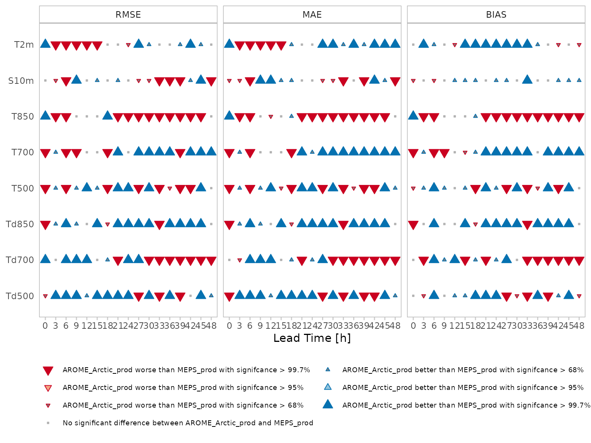

What is a score card?
Score cards provide a quick overview of the performance of one forecast model compared with another. It shows which model has better performance for a range of scores and statisical significance of those differences. The statisitcal significance is computed by pooling the data by, for example, forecast date, and computing the score for each pool and then sampling from those pools, with replacement, to compute a mean score. This process is repeated n times using a bootstrap method, and the difference between the forecast models for each mean score is calculated for each of the n bootstrap replicates. The proportion of the scores that are better for one model than another gives the confidence of the difference. The example below shows a score card comparing many parameters for a range of scores for two forecast models, named “Model A” and “Model B”.

Score card generation
The process for generating a score card involves several steps:
- Reading the forecast data
- Selecting the common cases for all forecast model
- Reading the observation data
- Joining the observation data to the forecast data
- Bootstrapping the verification
These steps are repeated for each parameter and then the results can be joined together into a single object and the score card plotted.
We will first go over how to compute the data for a single parameter, in this case 2m temperature, which in harp is “T2m”. We will use data from the MEPS_prod and AROME_Arctic_prod deterministic models that are in the harpData package. Since these data only include one forecast, we will pool the scores by observation station.
If you don’t already have the harpData package install it with:
remotes::install_github("andrew-MET/harpData")
Note that harpData contains close to 1GB of data so may take some time to download.
Now we can begin the score card generation…
library(harp) #> Loading required package: harpIO #> Loading required package: harpPoint #> Loading required package: harpVis #> Loading required package: ggplot2 #> Loading required package: shiny #> Loading required package: harpSpatial #> Loading required package: meteogrid
param <- "T2m" # Read the forecast data fcst <- read_point_forecast( start_date = 2019021700, end_date = 2019021718, fcst_model = c("AROME_Arctic_prod", "MEPS_prod"), fcst_type = "det", parameter = param, by = "6h", file_path = system.file("FCTABLE/deterministic", package = "harpData") ) # Select the common cases fcst <- common_cases(fcst) # Pull the station IDs from fcst so we don't read too many observations stations <- pull_stations(fcst) # Read the observations obs <- read_point_obs( first_validdate(fcst), last_validdate(fcst), param, obs_path = system.file("OBSTABLE", package = "harpData"), stations = stations ) # Join the observations to the forecast fcst <- join_to_fcst(fcst, obs) # Bootstrap the score. Since we use the parameter argument to select the # parameter column in the data, we need to tell the function to use the # param variable as a column name rather than a variable. We do this by # wrapping in double curly brackets. result <- pooled_bootstrap_score( fcst, det_verify, # the function we want to use in the verification {{param}}, n = 100, # the number of bootstrap replicates pooled_by = "SID" ) result
#> ◌ confidence_limits
#> # A tibble: 34 x 18
#> mname leadtime num_cases_lower bias_lower rmse_lower mae_lower stde_lower
#> <chr> <dbl> <dbl> <dbl> <dbl> <dbl> <dbl>
#> 1 AROM… 0 3.54 0.0234 0.728 0.578 NA
#> 2 AROM… 3 3.85 -0.00420 1.48 1.22 1.45
#> 3 AROM… 6 3.50 0.110 1.61 1.33 NA
#> 4 AROM… 9 3.88 0.172 1.72 1.43 1.41
#> 5 AROM… 12 3.53 0.172 1.80 1.49 NA
#> 6 AROM… 15 3.85 0.307 1.78 1.49 1.43
#> 7 AROM… 18 3.54 0.360 1.84 1.53 NA
#> 8 AROM… 21 3.83 0.114 1.77 1.43 1.49
#> 9 AROM… 24 3.50 0.145 1.74 1.40 NA
#> 10 AROM… 27 3.85 0.152 1.57 1.29 1.23
#> # … with 24 more rows, and 11 more variables: num_cases_upper <dbl>,
#> # bias_upper <dbl>, rmse_upper <dbl>, mae_upper <dbl>, stde_upper <dbl>,
#> # num_cases <int>, bias <dbl>, rmse <dbl>, mae <dbl>, stde <dbl>,
#> # parameter <chr>
#>
#> ◌ confidence_of_differences
#> # A tibble: 152 x 12
#> fcst_model leadtime score ref_model pc_diff symbol y value diff
#> <chr> <dbl> <chr> <chr> <dbl> <chr> <dbl> <dbl> <dbl>
#> 1 AROME_Arc… 0 bias MEPS_prod 0.92 . 1 0.125 0.0210
#> 2 AROME_Arc… 0 mae MEPS_prod -1 - 1 0.654 -0.321
#> 3 AROME_Arc… 0 num_… MEPS_prod 0 . 1 627 0
#> 4 AROME_Arc… 0 rmse MEPS_prod -1 - 1 1.02 -0.396
#> 5 AROME_Arc… 3 bias MEPS_prod -0.99 - 1 0.249 -0.0981
#> 6 AROME_Arc… 3 mae MEPS_prod 1 + 1 1.35 0.0907
#> 7 AROME_Arc… 3 num_… MEPS_prod 0 . 1 678 0
#> 8 AROME_Arc… 3 rmse MEPS_prod 1 + 1 2.03 0.138
#> 9 AROME_Arc… 3 stde MEPS_prod -0.97 - 1 2.02 0.155
#> 10 AROME_Arc… 6 bias MEPS_prod -0.82 . 1 0.344 -0.0411
#> # … with 142 more rows, and 3 more variables: ref_value <dbl>, better <dbl>,
#> # parameter <chr>The score card will eventually be plotted from information in the “confidence of differences” data frame in the result. You don’t really need to be familiar with the content of the data frame, except to note that ‘fcst_model’ and ‘ref_model’ are column names and we will want to choose values from those columns when we come to plot the data.
Multiple parameters
Now that we have computed the data for one parameter, how should we do it for multiple parameters? We could write a for loop around the above code, but that isn’t all that flexible. It would be preferable to turn the above into a function so that we can reuse it and use R’s lapply function to apply our new function to multiple parameters. Let’s start with making a function, being sure to not hard code anything - we will need arguments for the start and end dates (start_date and end_date), the frequency of the forecasts (by), the names of the forecast models (fcst_model), the forecast type (whether they are ensemble forecasts or deterministic: fcst_type), the paths to the forecasts and observations (fcst_path and obs_path), the number of bootstrap replicates to do (n), what to pool the scores by (pooled_by), and of course the parameter (param). Since we have such a small amount of data in this example we need to set the minimum number of cases to something small (min_cases) to ensure that the function runs. We will also add a groupings argument, with the default value “leadtime”, which we will use in a later example.
scorecard_function <- function( param, start_date, end_date, by, fcst_model, fcst_type, fcst_path, obs_path, n, pooled_by, min_cases, groupings = "leadtime" ) { # Output some information to the user message("\n") message("Generating scorecard data for ", param) message("==============================", rep("=", nchar(param)), "\n") fcst <- read_point_forecast( start_date = start_date, end_date = end_date, fcst_model = fcst_model, fcst_type = fcst_type, parameter = param, by = by, file_path = fcst_path ) fcst <- common_cases(fcst) stations <- pull_stations(fcst) obs <- read_point_obs( start_date = first_validdate(fcst), end_date = last_validdate(fcst), parameter = param, obs_path = obs_path, stations = stations ) # If no obervations were found return NULL if (nrow(obs) < 1) return(NULL) fcst <- join_to_fcst(fcst, obs) if (fcst_type == "det") { pooled_bootstrap_score( fcst, det_verify, {{param}}, n = n, pooled_by = pooled_by, min_cases = min_cases, groupings = groupings ) } else { pooled_bootstrap_score( fcst, ens_verify, {{param}}, n = n, pooled_by = pooled_by, min_cases = min_cases, groupings = groupings ) } }
Now we have our function we can call if for multiple parameters using lapply
parameters <- c("T2m", "S10m", "T850", "T700", "T500", "Td850", "Td700", "Td500") scorecard_data <- lapply( parameters, scorecard_function, start_date = 2019021700, end_date = 2019021718, by = "6h", fcst_model = c("AROME_Arctic_prod", "MEPS_prod"), fcst_type = "det", fcst_path = system.file("FCTABLE/deterministic", package = "harpData"), obs_path = system.file("OBSTABLE", package = "harpData"), n = 100, pooled_by = "SID", min_cases = 5 )
The output in scorecard_data is a list, with one element for each parameter. Before we can plot the score card, we need to bind all of those elements into a single element using harpPoint::bind_bootstrap_score.
scorecard_data <- bind_bootstrap_score(scorecard_data)
Now we can plot the score card using harpVis::plot_scorecard. We need to tell the function which model we want to assess and which model to use as the reference. We also need to tell the function which scores we want to include in the score card.
plot_scorecard( scorecard_data, fcst_model = "AROME_Arctic_prod", ref_model = "MEPS_prod", scores = c("rmse", "mae", "bias") )
